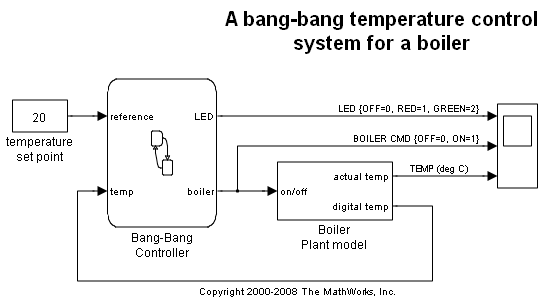
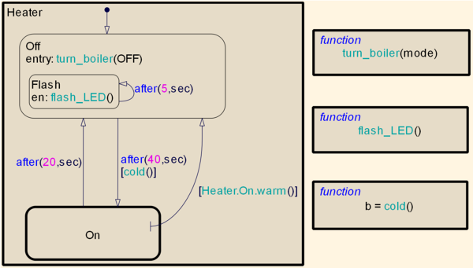
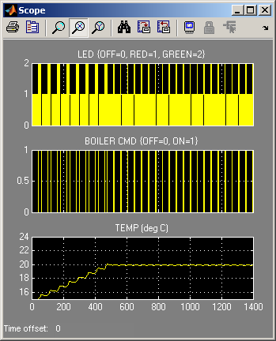

時相論理を使ったバンバン制御
このデモでは、Stateflow® を使用してボイラーのバンバン温度制御システムをモデル化する方法を示します。ボイラーのダイナミクスが、ボイラー プラント モデルの Simulink® でモデル化されます。
目次
この Stateflow チャートは、ボイラーのオン/オフが切り替わるタイミングを制御します。最初、ボイラーは、turn_boiler グラフィカル関数を使用してオフにされています。5 秒ごとにボイラーの LED が点滅しますが、この動作でもグラフィカル関数が使用されます。40 秒後、ボイラーが冷たいと、ボイラーがオンに切り替えられます。20 秒後、ボイラーが再びオフに切り替えられます。以上のサイクルが繰り返されます。
ステート間遷移の制御と LED の周期的点滅には、絶対時間の時相論理を使用することに注意してください。構文 after(20,sec) は、ステートが入力されてから 20 秒後に遷移が生じることを意味します。チャートには sec と呼ばれる入力イベントがありません。sec は時相論理演算子で使用することができるキーワードで、イベントの発生回数ではなくシミュレーション時間を単位として遅延を指定します。
every 時相論理演算子を sec キーワードと一緒に使用することはできないため、"回避策" を講じます。これには、条件 after(5,sec) によってトリガーされる自己遷移を伴う、Flash という内部サブステートを使用します。これは、Flash サブステートの entry アクションが 5 秒ごとに実行されることを意味します。
シミュレーション結果
Simulink を調べると、約 450 秒後にボイラー温度が、設定温度の 20℃に効果的に維持されていることがわかります。
